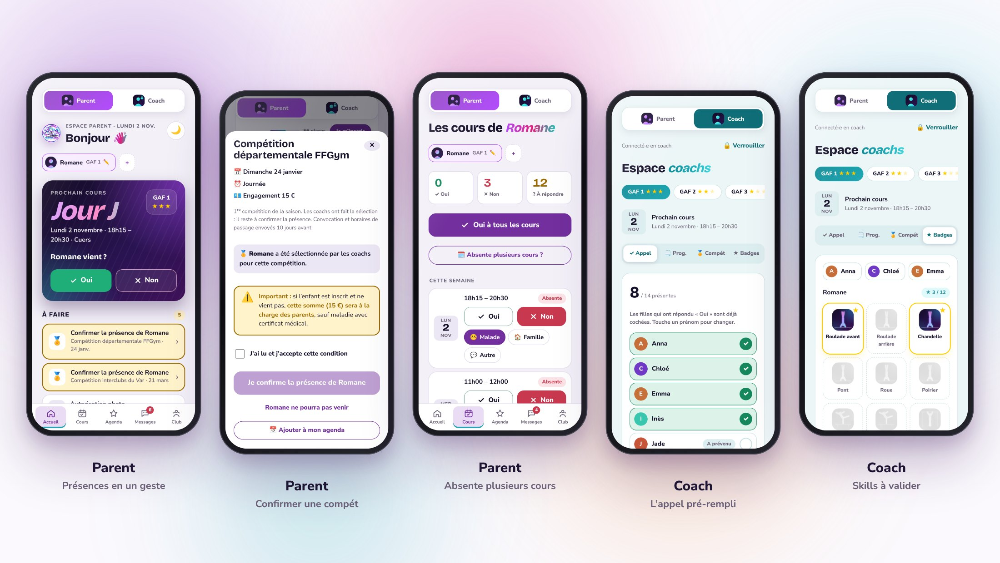
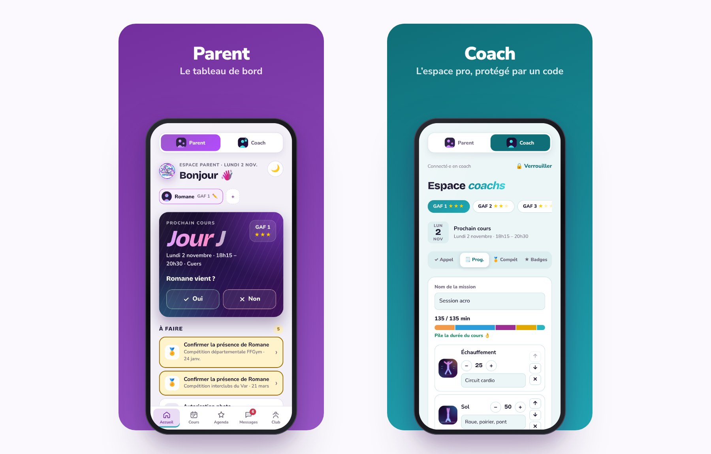
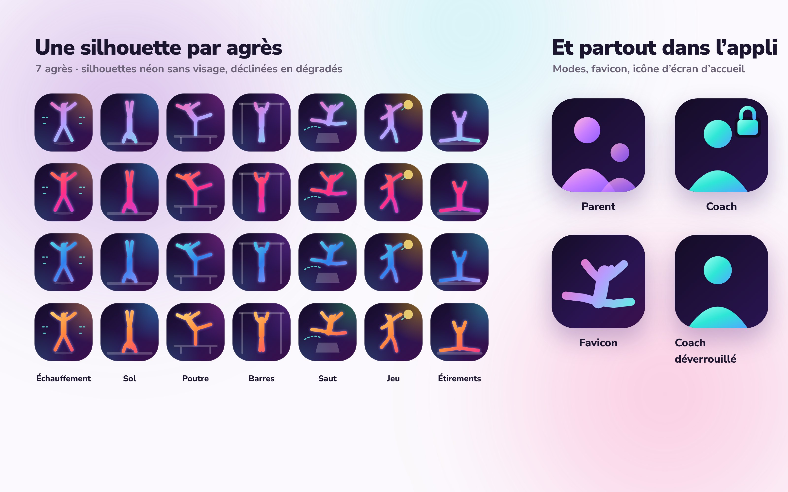
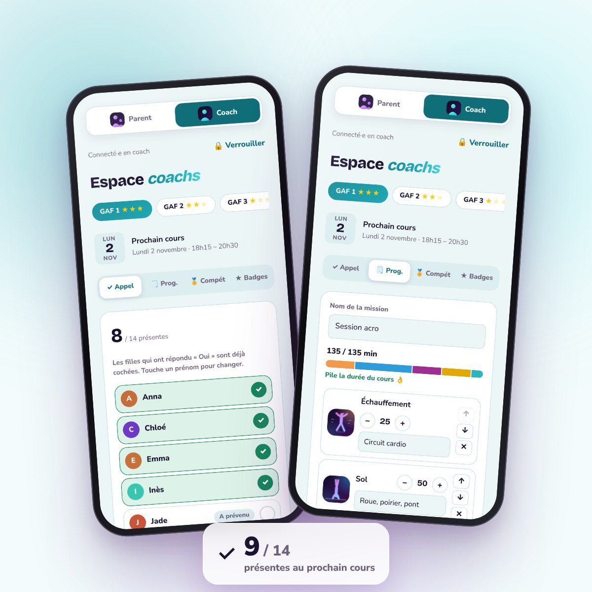
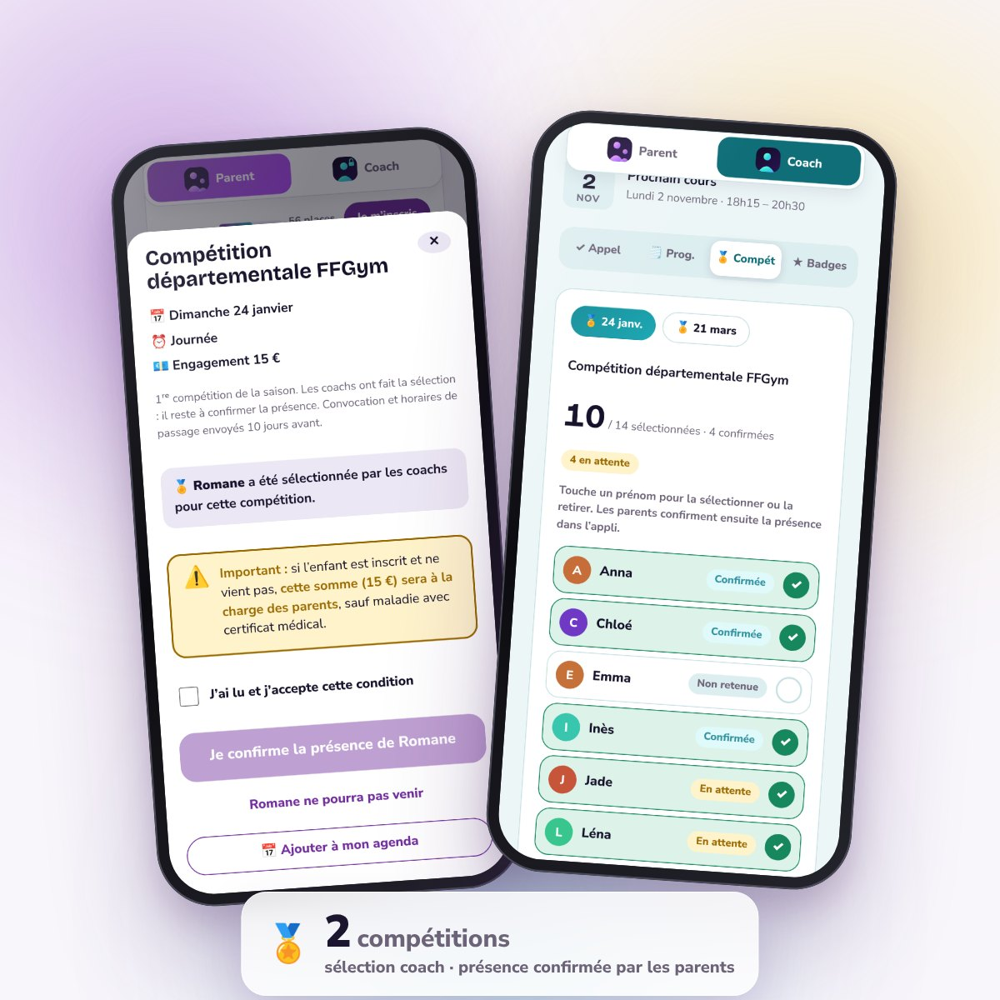
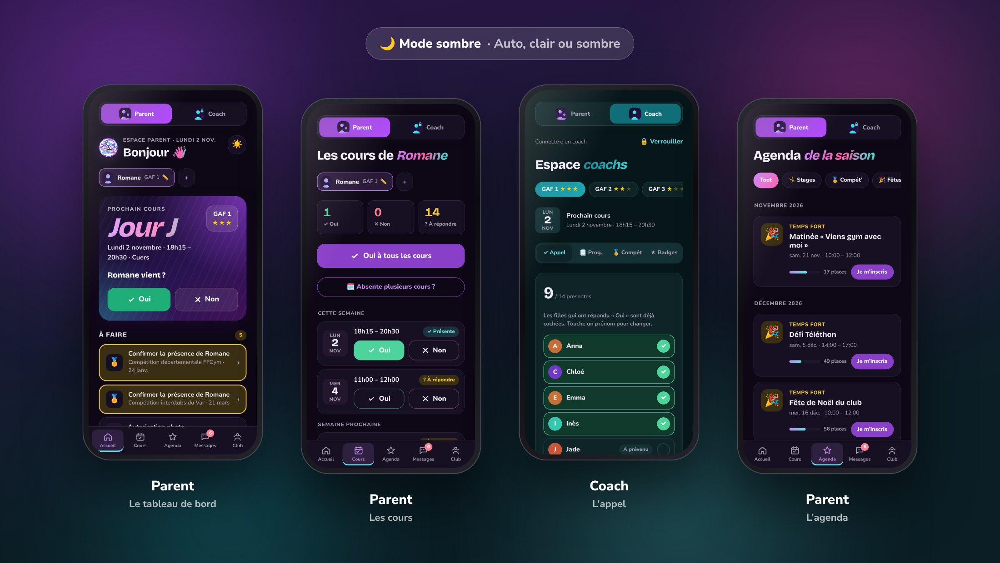
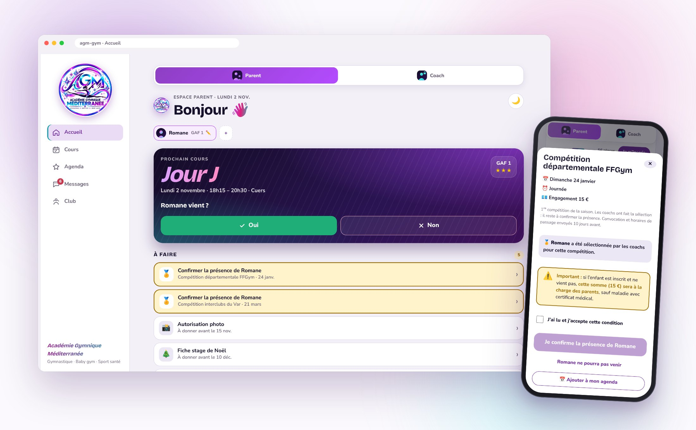

L’appli d’un club de gym associatif, pensée pour les parents et les coachs.
Un club de gymnastique du Var, l’Académie Gymnique Méditerranée, avec peu de moyens et beaucoup de bénévoles. Les infos passent par un site, des messages et le bouche-à-oreille. Les coachs ne savent pas qui viendra au cours, et les parents ne sont pas tous à l’aise avec les applis. L’objectif : une appli très simple, avec peu de texte, qui fait gagner du temps aux familles comme aux coachs.
« Romane vient ? » Oui ou Non, et les coachs sont prévenus. Une absence d’une semaine se déclare en une fois, et l’accueil liste tout ce qu’il reste à faire.
Les coachs sélectionnent pour les compétitions, les parents confirment. La règle sur les frais d’engagement est mise en évidence avant de valider.
Une couleur par espace, toujours visible en haut de l’écran. L’espace coachs est protégé par un code.

Une même appli, deux publics. Les parents gèrent les présences, les compétitions, l’agenda, les documents et les messages. Les coachs font l’appel, sélectionnent pour les compétitions, préparent leur programme à partir d’une banque d’exercices et valident les skills.
Le prototype a été testé avec une coach et une aidante du club. Résultat : l’espace gymnaste a été retiré, et le programme du cours n’est plus montré aux familles. Il peut changer le jour J selon le groupe, et une séance annoncée puis modifiée crée de la déception chez les enfants. Le programme reste un outil interne aux coachs.






La vidéo de lancement. Une barre de question se tape lettre par lettre puis se transforme en écran de l’appli, d’une scène à l’autre : une présence, une compétition, une absence, puis l’appel côté coach. Animation image par image et bande-son composée pour l’occasion.
Répondez aux présences, confirmez une compétition, déclarez une absence sur plusieurs cours. Espace coachs : n’importe quel code à 4 chiffres.